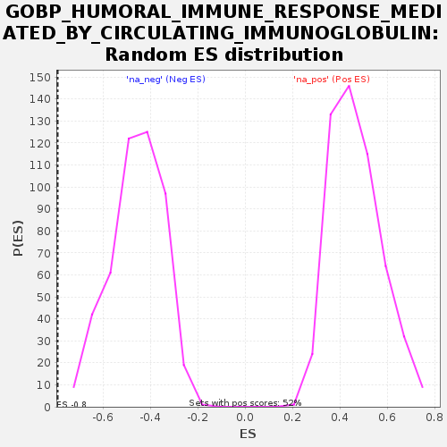

Profile of the Running ES Score & Positions of GeneSet Members on the Rank Ordered List
| Dataset | GEP2_vs_GEP6_residuals |
| Phenotype | NoPhenotypeAvailable |
| Upregulated in class | na_neg |
| GeneSet | GOBP_HUMORAL_IMMUNE_RESPONSE_MEDIATED_BY_CIRCULATING_IMMUNOGLOBULIN |
| Enrichment Score (ES) | -0.79138917 |
| Normalized Enrichment Score (NES) | -1.727179 |
| Nominal p-value | 0.0 |
| FDR q-value | 0.13171153 |
| FWER p-Value | 0.414 |
| SYMBOL | RANK IN GENE LIST | RANK METRIC SCORE | RUNNING ES | CORE ENRICHMENT | |
|---|---|---|---|---|---|
| 1 | PTPRC | 246 | 0.001 | 0.0010 | No |
| 2 | SUSD4 | 903 | 0.000 | -0.1210 | No |
| 3 | C1QC | 1093 | 0.000 | -0.1522 | No |
| 4 | C1QB | 1176 | 0.000 | -0.1629 | No |
| 5 | C1QA | 1238 | 0.000 | -0.1698 | No |
| 6 | TNF | 1375 | 0.000 | -0.1929 | No |
| 7 | LTA | 1526 | 0.000 | -0.2196 | No |
| 8 | C1R | 1570 | 0.000 | -0.2249 | No |
| 9 | C7 | 1794 | 0.000 | -0.2675 | No |
| 10 | SERPING1 | 1822 | 0.000 | -0.2706 | No |
| 11 | C1S | 2126 | 0.000 | -0.3302 | No |
| 12 | C3 | 2354 | 0.000 | -0.3750 | No |
| 13 | TREM2 | 2932 | -0.000 | -0.4906 | No |
| 14 | CLU | 3524 | -0.000 | -0.6072 | No |
| 15 | C2 | 3559 | -0.000 | -0.6115 | No |
| 16 | IGHG1 | 3613 | -0.000 | -0.6193 | No |
| 17 | IGHG3 | 3739 | -0.000 | -0.6411 | No |
| 18 | EXO1 | 3937 | -0.000 | -0.6759 | No |
| 19 | C4BPB | 4077 | -0.000 | -0.6975 | No |
| 20 | IGHE | 4117 | -0.000 | -0.6985 | No |
| 21 | CFI | 4126 | -0.000 | -0.6932 | No |
| 22 | IGHA1 | 4323 | -0.000 | -0.7219 | No |
| 23 | IGHD | 4385 | -0.000 | -0.7220 | No |
| 24 | CD55 | 4731 | -0.000 | -0.7536 | Yes |
| 25 | FCMR | 4843 | -0.001 | -0.7041 | Yes |
| 26 | PTPN6 | 4891 | -0.001 | -0.6197 | Yes |
| 27 | FCGR2B | 4892 | -0.001 | -0.5251 | Yes |
| 28 | IGHA2 | 4901 | -0.001 | -0.4285 | Yes |
| 29 | CR2 | 4919 | -0.001 | -0.3224 | Yes |
| 30 | FCER2 | 4958 | -0.001 | -0.1911 | Yes |
| 31 | CR1 | 4983 | -0.002 | 0.0032 | Yes |
